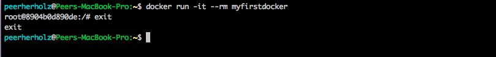
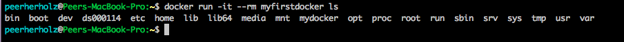
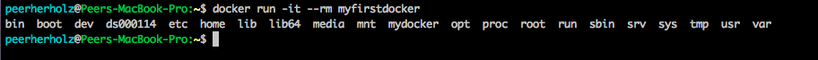
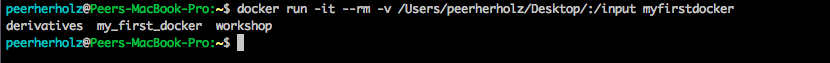
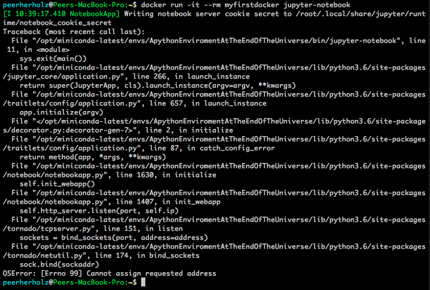
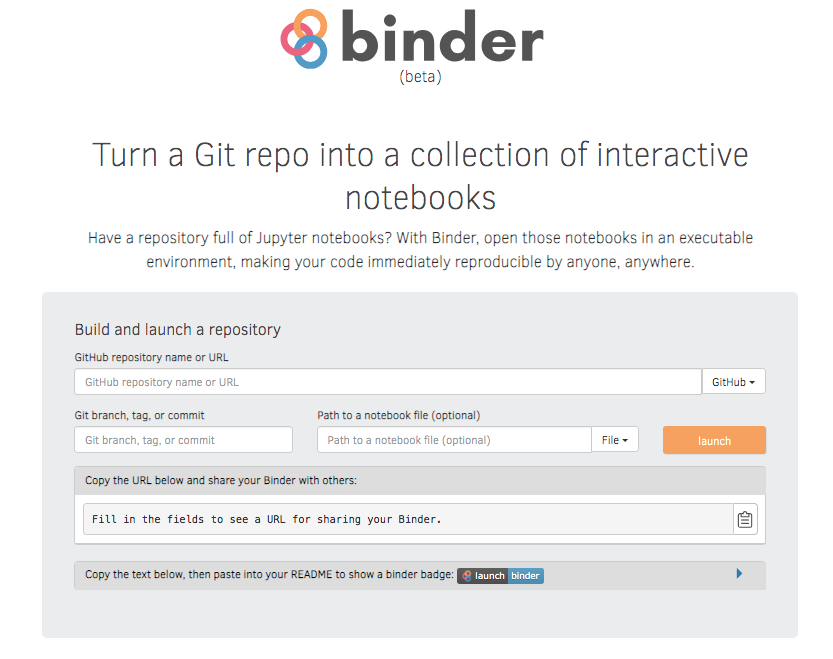
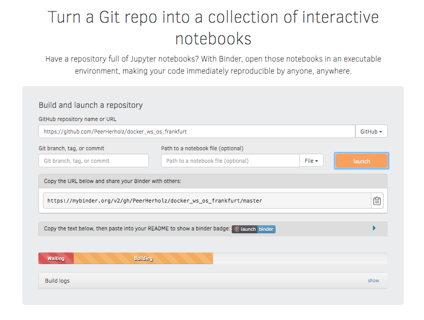

name: inverse layout: true class: center, middle, inverse --- # Automating docker commands ## do it, just do it ### ~45min --- layout: false ##<span style="color:purple">Outline</span> - ### Learning objectives - ### Introduction - ### To automatization and beyond --- ## <span style="color:purple">Learning objectives</span> - ### automatically run rather simple commands - ### automatically run rather complex commands - ### automatically run rather simple commands that require user inputs -- ## <span style="color:purple">Requirements</span> - ### Your computer: `Docker` - ### You: `shell` / `Terminal` --- name: inverse layout: true class: center, middle, inverse --- # Introduction --- layout: false ### <span style="color:purple">Docker automatization</span> - ### so far, we (hopefully) got to know how *docker* works, how *containers* can be downloaded, used and managed, `build` and `pushed`, as well as equipped with data -- - ### however, we're missing one super cool part: the automatization of functionality -- - ### *Docker containers' can be setup and configured to do a certain task upon starting / running -- - ### these automatized *commands* can nearly be everything you want, from simple to incredibly complex tasks --- ### <span style="color:purple">Docker automatization</span> - if you remember all the way back in the `docker quickstart` lecture, we saw that our *ubuntu container* did simply nothing after starting, because it wasn't tasked to do so ```bash docker run ubuntu ``` <img src="images/docker_run_ubuntu_example.png" width="70%" /> -- - when providing a task, the respective function was executed ```bash docker run ubuntu echo "hello from your container" ``` <img src="images/docker_run_ubuntu_example_2.png" width="70%" /> --- ### <span style="color:purple">Docker automatization</span> - we can observe the same behavior in our *Docker container* - upon starting/running, we enter the shell and that's it  -- - if we now set a task within our `docker run` *command* the respective task is executed, for example `ls` ```bash docker run -it --rm myfirstdocker ls ```  -- - that's of course by no means automatization, so let's check how we can automatize for example the `ls` command, such that whenever we start/run our *Docker container* we get the respective output --- ### <span style="color:purple">Docker automatization</span> - by now you're probably tired of hearing this, but as everything else with *docker* automatization is achieved rather easy and straightforward -- - all we need to do is to include the *function* or `command` we want to automatize in our *Dockerfile* -- - this is done via the `CMD` command that should go at the end of our *Dockerfile* ```bash CMD ["ls"] ``` -- - we then, of course have to rebuild the *container* -- - if starting/running the new *container*, we automatically run `ls` and get the output  --- ### <span style="color:purple">Docker automatization</span> - while this is a toy example, it can be adapted to reflect a more prototypic *docker application*, that is the interaction between your *host system* and certain functionality inside a *docker container* -- - let's image we don't want to `ls` "within" our *docker container* but on our host system through our *docker container*, we can simply combine what we know about *automatization* and *mounting paths* -- - hence, we have to adapt our command to apply `ls` to a certain directory (e.g., input), with that directory being *mounted* during `docker run` - while we're at it, let's use the other option for `automatization`, that is adding our *command* to the `ENTRYPOINT` ```bash ENTRYPOINT ["ls", "/input"] ``` -- - running our *Docker container* accordingly, gives us the following:  --- ### <span style="color:purple">Docker automatization - jupyter notebooks</span> - considering data processing using docker, `jupyter notebooks` come in super handy, hence we're gonna check how to use them -- - at first we have to adapt our *Dockerfile* so that the *Docker container* no longer automatically `runs` `ls` -- - rebuild the image! -- - before automatization itself, there was ...... ```bash docker run -it --rm myfirstdocker jupyter-notebook ```  --- ### <span style="color:purple">Docker automatization - jupyter notebooks</span> - as we've seen the `jupyter notebooks` can't be run, because the request address for the `notebook server` can't be assigned -- - to solve this our *Dockerfile* needs to specific this information: ```bash RUN mkdir -p ~/.jupyter && echo c.NotebookApp.ip = \"0.0.0.0\" > \ ~/.jupyter/jupyter_notebook_config.py ``` -- - rebuild the container! -- - now, when running our *Docker container* and aim to use `jupyter notebooks`, we need to `mount` the respective `ports` (comparably to `paths`) -- - this is enabled through the `-p` flag ```bash docker run -it --rm -p 8888:8888 myfirstdocker jupyter-notebook --allow-root ``` --- ### <span style="color:purple">Docker automatization - jupyter notebooks</span> --- ### <span style="color:purple">Docker automatization - jupyter notebooks - awesome sidequest</span> - when working with `jupyter notebooks` and *docker*, there is actually a thingy that is just off the charts -- - make sure to check [mybinder](https://mybinder.org/)  --- ### <span style="color:purple">Docker automatization - jupyter notebooks - awesome sidequest</span> - [mybinder](https://mybinder.org/) takes a given *GitHub repository* into an interactive version based on the *Dockerfile* -- - just copy paste the link to the *Github repository* and done!  --- - small python scrip that adds input 1 and 2 - nibls on example data --- --- name: inverse layout: true class: center, middle, inverse --- # Questions?